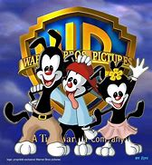

ANIMINIANCS
Animaniacs is a variety show, with short skits featuring a large cast of characters. While the show had no set format, the majority of episodes were composed of three shor mini-episodes, each starring a different set of characters, and bridging segments. Hallmarks of the series included its music, satirical social commentary, pop culture references, character catchphrases, and innuendo directed at an adult audience.